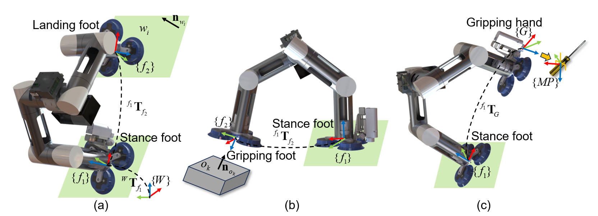
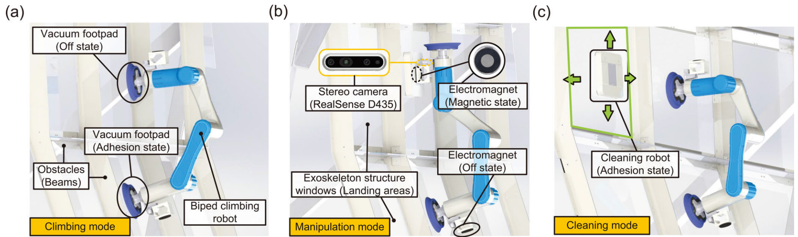
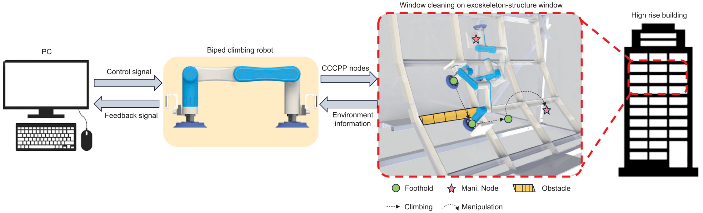
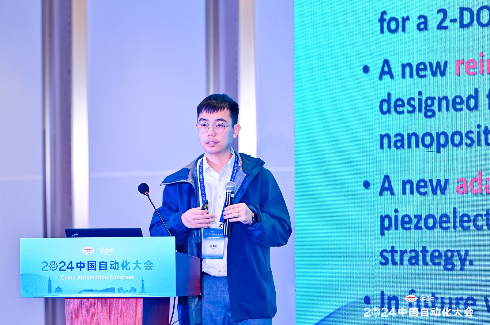
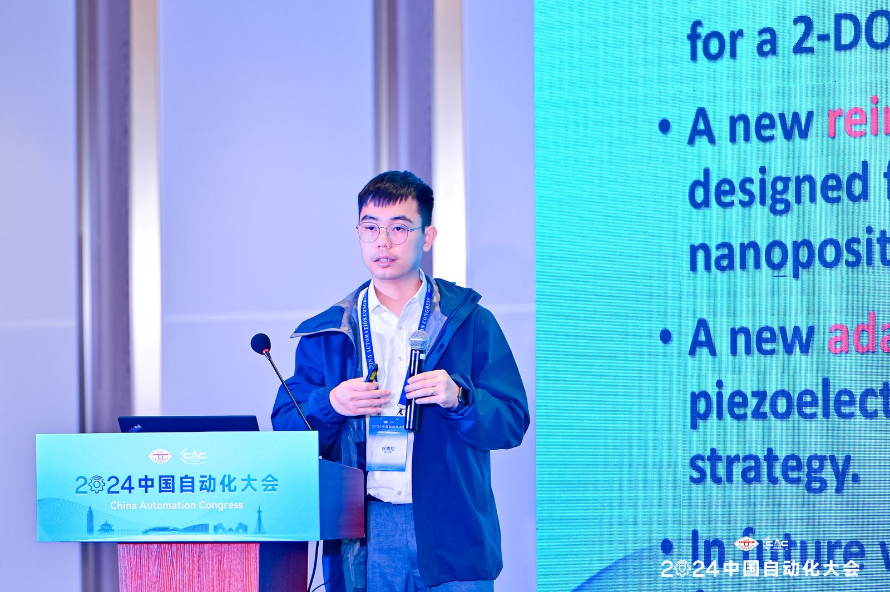

|
Weijian Zhang
I am a fourth-year PhD student in the Department of Electromechanical Engineering, Faculty of Science and Technology, University of Macau.
My supervisor is Prof. Qingsong Xu, IEEE and ASME Fellow. My research focuses on the development of flexible, compact, and untethered legged wall-climbing robots with multi-functional manipulation capabilities. By combining multiple modular motors, diverse sensing mechanisms, and specialized tools, I developed advanced autonomous robotic solutions for hazardous tasks such as building maintenance. I am interested in robotic system design, advanced control strategies, and reinforcement learning for enabling robust, adaptive, and intelligent robotic behaviors.
Email /
Scholar
|

|
RESEARCH HIGHLIGHTS
- Bio-inspired untethered biped wall-climbing robots for building maintenance
- Integrated design of locomotion, adhesion, sensing, and manipulation
- Autonomous window-cleaning with hierarchical planning and reinforcement learning
- From mechanical design to control and real-world deployment
|
Design and Development of a New Bio-inspired 7-DOF Untethered Biped Wall-Climbing Robot
Weijian Zhang,
Boyu Wang, Zikang Li, Yuan Yin,
Lap Mou Tam,
Qingsong Xu
IEEE/ASME Transactions on Mechatronics, Accepted, 2025

|
Design and Development of a New Biped Robotic System for Exoskeleton-Structure Window Cleaning
Weijian Zhang,
Zikang Li, Xianli Wang, Yonghao Huang, Junan Li,
Lap Mou Tam,
Qingsong Xu
IEEE Transactions on Automation Science and Engineering,
2024, 22: 3160–3171

|
Deep Q-Network-Based Hierarchical Path Planning of a Biped Wall-Climbing Robot for Window Cleaning
Weijian Zhang,
Zikang Li,
Lap Mou Tam,
Qingsong Xu
Advanced Intelligent Systems,
2400745, 2025

|
PUBLICATIONS AND PATENTS
Journal Papers
-
Weijian Zhang, Boyu Wang, Zikang Li, Yuan Yin, Lap Mou Tam and Qingsong Xu,
“Design and Development of a New Bio-inspired 7-DOF Untethered Biped Wall-Climbing Robot,”
IEEE/ASME Transactions on Mechatronics, 2025, Early Access,
DOI: 10.1109/TMECH.2025.3619580. (JCR Q1, IF: 7.3)
-
Weijian Zhang, Zikang Li, Xianli Wang, Yonghao Huang, Junan Li, Lap Mou Tam and Qingsong Xu,
“Design and Development of a New Biped Robotic System for Exoskeleton-Structure Window Cleaning,”
IEEE Transactions on Automation Science and Engineering, 2024, 22: 3160-3171. (JCR Q1, IF: 6.4)
-
Weijian Zhang, Zikang Li, Lap Mou Tam and Qingsong Xu,
“Deep Q-Network-Based Hierarchical Path Planning of a Biped Wall-Climbing Robot for Window Cleaning,”
Advanced Intelligent Systems, 2400745, 2025. (JCR Q1, IF: 6.1)
-
Weijian Zhang, Haibo Du and Zhaobi Chu,
“Robust discrete-time non-smooth consensus protocol for multi-agent systems via super-twisting algorithm,”
Applied Mathematics and Computation, 2022, 413: 126636. (JCR Q1, IF: 3.4)
-
Weijian Zhang, Haibo Du, Wenwu Zhu, Linan Wang.
“Finite-Time Speed Control of Permanent Magnet Synchronous Motors without Velocity Sensors Based on a Generalized Super-Twisting Algorithm,”
Control Theory & Applications, 2021, 38(6). (EI; Peking University Core Journal)
-
Zikang Li, Weijian Zhang, Yonghao Huang, Lap Mou Tam and Qingsong Xu,
“Real-Time Obstacle Detection for a Biped Robot Climbing on Exoskeleton-Structure Glass Windows,”
IEEE Transactions on Automation Science and Engineering, 2025, 22: 13519-13530. (JCR Q1, IF: 6.4)
-
Zikang Li, Weijian Zhang, Yonghao Huang, Yuan Yin and Qingsong Xu,
“Development of a New Biped Robot With Adaptive Suction Modules for Curved-Surface Climbing,”
IEEE Robotics and Automation Letters, 2025, 10(7): 7436-7443. (JCR Q1, IF: 5.3)
-
Zikang Li, Weijian Zhang, Yuan Yin and Qingsong Xu,
“A Low‐Cost Curvature Detection Method for an Untethered Biped Pipeline Climbing Robot with Energy‐Efficient Strategy,”
Advanced Robotics Research, 2025: 202500034.
-
Boyu Wang, Weijian Zhang, Jianghan Luo and Qingsong Xu,
“Design of a Modular Wall-Climbing Robot with Multi-Plane Transition and Cleaning Capabilities,”
Biomimetics, 2025, 10(7), 450. (JCR Q1, IF: 3.9)
-
Yuan Yin, Zikang Li, Weijian Zhang, Yechen Zhang and Qingsong Xu,
“Design of a Flexible Passive Adaptive Suction Module for Wall-Climbing Robots,”
IEEE Robotics and Automation Letters, 2025, 10(12):12429-12436. (JCR Q1, IF: 5.3)
-
Rungeng Zhang, Zehao Wu, Weijian Zhang and Qingsong Xu,
“Adaptive Fuzzy Fixed-Time Trajectory Tracking Control for a Piezoelectric-Driven Microinjector,”
Micromachines, 2025, 16(12), 1332. (JCR Q2, IF: 3.0)
-
Zehao Wu, Xianli Wang, Yuning Cao, Weijian Zhang and Qingsong Xu,
“Robotic Ultrasound Scanning End-Effector with Adjustable Constant Contact Force,”
Cyborg and Bionic Systems, 2025, 6: 0251. (JCR Q1, IF: 18.1)
-
Di Wu, Weijian Zhang, Haibo Du and Xiangyu Wang,
“Robust adaptive finite‐time trajectory tracking control of a quadrotor aircraft,”
International Journal of Robust and Nonlinear Control, 2021, 31(16), 8030-8054. (JCR Q2, IF: 3.2)
-
Linan Wang, Haibo Du, Weijian Zhang, Di Wu and Wenwu Zhu,
“Implementation of integral fixed-time sliding mode controller for speed regulation of PMSM servo system,”
Nonlinear Dynamics, 2020, 102(1), 185-196. (JCR Q1, IF: 6.0)
-
Shenshen Li, Yingying Cheng, Haibo Du, Qingqiu Du and Weijian Zhang,
“Design and analysis of state-constrained nonlinear finite-time control algorithm with application to buck converter,”
Nonlinear Dynamics, 2024, 112(14), 12191-12202. (JCR Q1, IF: 6.0)
Conference Papers
-
Weijian Zhang, Zikang Li and Qingsong Xu,
“Novel Complete Coverage Path Planning of a Biped Wall-Climbing Robot for Window Cleaning,”
2024 IEEE International Conference on Robotics and Biomimetics (ROBIO), Bangkok, Thailand, Dec. 2024.
-
Weijian Zhang, Zhengyang Li and Qingsong Xu,
“Design and Analysis of a New Biped Wall-Climbing Robot System,”
The 9th IEEJ International Workshop on Sensing, Actuation, Motion Control, and Optimization (SAMCON), Nanjing, China, Mar. 2023, 567-572.
-
Weijian Zhang, Zehao Wu and Qingsong Xu,
“Design and control of a teleoperation system for a biped wall-climbing robot,”
Journal of Physics: Conference Series, 2025, 3101(1): 012008.
-
Zikang Li, Weijian Zhang and Qingsong Xu.
“Development of a Pipeline Surface Curvature Detection Method for Biped Climbing Robotic System,”
2025 IEEE International Conference on Mechatronics and Automation (ICMA), 2025, 210-215. (Toshio Fukuda Best Paper Award in Mechatronics)
-
Zikang Li, Weijian Zhang, Zehao Wu and Qingsong Xu,
“Development of a New Biped Robot with Adaptive Suction Modules for Climbing on Curved Surfaces,”
2025 IEEE International Conference on Robotics and Automation (ICRA), 2891-2896.
Patents
-
Haibo Du, Weijian Zhang, et al.,
“A permanent magnet synchronous motor control system based on discrete super-twisting sliding mode algorithm,”
China Invention Patent, Granted, Grant No. CN113141136B, 2022.
-
Qingsong Xu, Lap Mou Tam, Weijian Zhang,
“Wall-climbing robot,” China Invention Patent, Pending, Application No. CN202411636156.9, 2024.
-
Qingsong Xu, Boyu Wang, Weijian Zhang,
“A wall-climbing cleaning robot,” China Invention Patent, Pending, Application No. CN202510813606.5, 2025.
|
SKILLS
- Tools: Matlab/Simulink, C/C++, Python, Linux, ROS, MoveIt, RViz, Gazebo, SolidWorks, LaTeX, Isaac Gym
- Hardware and Robots: Universal Robot, Franka Research 3, Vicon motion capture, modular-based biped wall-climbing robots, vacuum adhesion, electro-permanent magnetic gripper, 6-axis force sensor, 3D Systems Touch device
|
ACADEMIC SERVICE
Journals
- IEEE Transactions on Robotics (T-RO)
- IEEE Transactions on Automation Science and Engineering (T-ASE)
- IEEE Robotics and Automation Letters (RA-L)
- Robotics and Autonomous Systems
Conferences
- IEEE/RSJ International Conference on Intelligent Robots and Systems (IROS), 2025
- IEEE International Conference on Robotics and Automation (ICRA), 2024–2026
- IEEE International Conference on Automation Science and Engineering (CASE), 2023–2024
- IEEE International Conference on Industrial Electronics (IECON), 2023
|
Feel free to steal this website's source code.
Do not scrape the HTML from this page itself, as it includes analytics tags that you do not want on your own website — use the github code instead.
Also, consider using Leonid Keselman's
Jekyll fork of this page.
|
|
 
